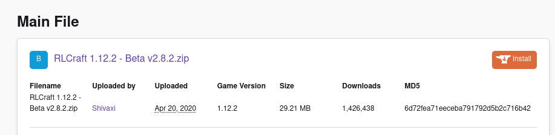

There are a few main ways of using mods. You can use Technic Launcher Twitch Launcher (soon to be this thing ) Install Forge Youself (this is a nightmare. Dont do it.) or use MultiMc what this guide is about.
I have found Twitch Launcher to be incredibly buggy, full of bloat, and only able to install premade-modpacks. Technic Launcher is alright, however, its modpack selection is not as large as CruseForge, and you cant manage the instances well.
This is where MultiMc comes into play. It provides advanced usability in a simple form. While MultiMc does not have its own mod market, you have the flexibility of installing any mods or modpacks you desire. You can also keep it Vinilla with the ability to manage multiple minecraft versions. Ontop of this, it provides easy access to texture pack and world folders. No more playing the "where the f**k is that folder?"!. This is just a small glimps of everything it can do and frankly I don't understand much of the other stuff....
There are generally two ways of installing Minecraft Mods. You can do it with the Twitch launcher but I generally don't reccomend it. Its bloated, very buggy, and has limited operating systems.MultiMc fixes this by allowing multiple intances and generally a much better way to manage mods.
1. Download and install the proper installer here.
2.Log into your Mojang account
While you can find modpacks on individual websites, I would reccomend getting them from curseforge. When you click on the modpack you will see an image like this
However, Dont worry, click on the files tab here:
You will see something like this:

Click the blue link, and you will be redirected to a page like this:
Save the zip somewhere you will remember.
Open MultiMC, click Add instance
From this menu select "import from zip"
Select Browse and add downloaded zip. And you're done!